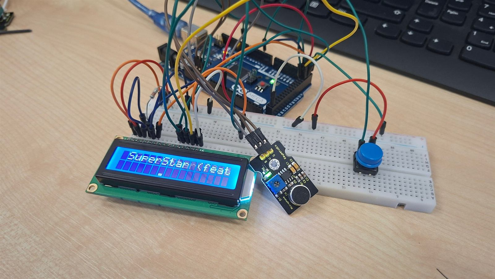
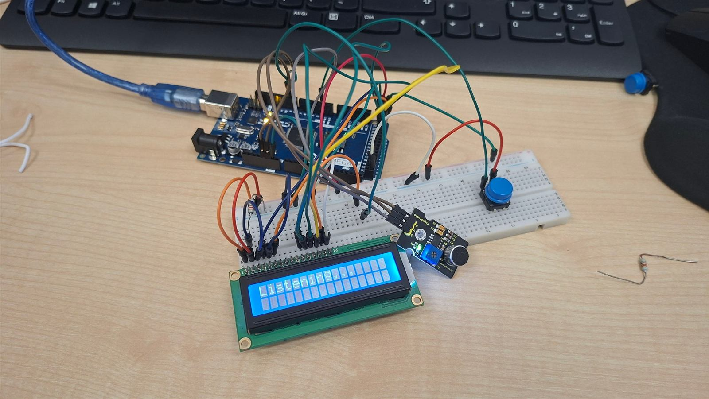
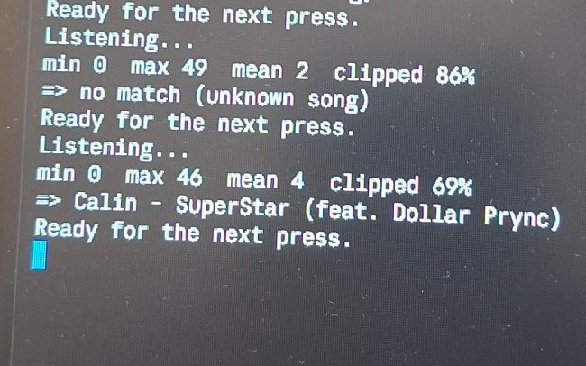

Projekt pre Arduino Mega
Hľadač piesní
Malé zariadenie, ktoré päť sekúnd počúva hudbu, cez internet rozpozná skladbu a zobrazí jej názov a interpreta na LCD displeji. Dolný riadok ukazuje živé spektrum zvuku.
- 16 pásiem
- 20 snímok za sekundu
- 5 s nahrávka
Čo to je
Equalizer, ktorý vie pomenovať pieseň
Hľadač piesní spája zvukový senzor, Arduino Mega, LCD displej a online službu na rozpoznávanie hudby. Stlačíš tlačidlo a Arduino päť sekúnd nahráva zvuk z okolia. Nahrávku pošle počítaču, ten ju odošle službe AudD a tá vráti názov skladby a interpreta. Výsledok sa zobrazí v hornom riadku displeja. Dlhší text sa po riadku posúva, aby sa dalo prečítať každé slovo.
Dolný riadok displeja pracuje samostatne. Arduino v ňom stále zobrazuje 16 stĺpcov, každý pre jedno frekvenčné pásmo, od basov vľavo po výšky vpravo. Stĺpce poskakujú podľa toho, čo práve hrá, takže displej funguje aj ako malý equalizer.
Arduino Mega nemá internet ani dosť výkonu na rozpoznávanie skladieb, preto sa o prácu delí s počítačom.
Číta tlačidlo, vzorkuje zvukový senzor, kreslí na LCD a počíta spektrum.
Prijme nahrávku, pošle ju službe AudD a výsledok vráti na displej.
Média
Ako to vyzerá naživo



Hardvér
Čo potrebuješ
Riadi všetko a komunikuje s počítačom cez USB.
Analógový mikrofón. Trimer na ňom mení zosilnenie.
Čip HD44780 s 16 pinmi, bez I2C modulu.
Spustí počúvanie.
Kontrast displeja. Alternatívou sú rezistory 4,7 kΩ a 1 kΩ.
Obmedzuje prúd podsvietenia.
Zapojenie bez spájkovania.
Softvér a účty
- Arduino IDE. Knižnica LiquidCrystal je jeho súčasťou.
- Python 3 s balíkmi
pyserial,numpyarequests. - Počítač s Windowsom a pripojením na internet. Ovládanie citlivosti klávesmi používa funkciu, ktorá je len vo Windowse.
- Bezplatný účet na audd.io a API kľúč.
Hardvér
Zapojenie
Všetko sa zapája na nepájivom poli. Najdôležitejšie je správne poradie pinov displeja. Displej beží v 4-bitovom režime, takže piny 7 až 10 (D0 až D3) nechaj nezapojené.
LCD displej 16×2
| Pin LCD | Označenie | Zapojiť na |
|---|---|---|
| 1 | VSS | GND |
| 2 | VDD | 5V |
| 3 | V0 | stredný vývod potenciometra (kontrast) |
| 4 | RS | Mega pin 22 |
| 5 | RW | GND |
| 6 | E | Mega pin 23 |
| 7 až 10 | D0 až D3 | nezapojené |
| 11 | D4 | Mega pin 24 |
| 12 | D5 | Mega pin 25 |
| 13 | D6 | Mega pin 26 |
| 14 | D7 | Mega pin 27 |
| 15 | A (podsvietenie +) | cez rezistor 220 Ω na Mega pin 9 |
| 16 | K (podsvietenie −) | GND |
Zvukový senzor
| Pin senzora | Zapojiť na |
|---|---|
| G | GND |
| V | 5V |
| S | Mega pin A4 |
Trimer na senzore nastavuje zosilnenie. Pri hlasnej skladbe by hodnota max vo výpise programu mala byť aspoň okolo 50.
Tlačidlo
Štvornohé tlačidlo má nožičky spojené po dvojiciach. Zapoj ho uhlopriečne: jednu nožičku na Mega pin 2 a protiľahlú na GND. Rezistor netreba, program zapína vnútorný pull-up.
Podsvietenie a kontrast
Rezistor 220 Ω vedie z vývodu A na pin 9, ktorý vie meniť jas. Kontrast nastavíš potenciometrom medzi 5V a GND so stredným vývodom na V0. Bez neho urob delič: 4,7 kΩ z 5V na V0 a 1 kΩ z V0 na GND. V0 priamo na GND je maximálny kontrast, pri ktorom sa písmená strácajú v štvorčekoch.
Softvér
Služba AudD
AudD je online služba na rozpoznávanie hudby. Pošleš jej krátku nahrávku, stačí pár sekúnd, a vráti názov skladby, interpreta, album a odkaz. Nahrávku porovnáva so zvukovými odtlačkami skladieb vo svojej databáze.
Ako získať kľúč
- Zaregistruj sa na dashboard.audd.io.
- Na hlavnej stránke dashboardu nájdeš svoj
api_token. Skopíruj ho. - Po registrácii máš skúšobné obdobie, v ktorom môžeš API vyskúšať zadarmo. Aktuálne limity a ceny sú v dashboarde.
Ako vyzerá požiadavka
Stačí jeden HTTP POST na https://api.audd.io/ s poľom api_token a súborom v poli file.
import requests
r = requests.post(
"https://api.audd.io/",
data={"api_token": "SEM_VLOZ_SVOJ_TOKEN"},
files={"file": open("nahravka.wav", "rb")},
)
print(r.json()){
"status": "success",
"result": {
"artist": "Tears For Fears",
"title": "Everybody Wants To Rule The World",
"album": "Songs From The Big Chair",
"release_date": "2014-11-10",
"timecode": "00:56"
}
}Keď AudD skladbu nepozná, pole result je null a program zobrazí „No match, try again“. Pri zlom kľúči vráti chybu authorization failed.
host/audd_token.txt, ktorý Git ignoruje.
Princíp
Ako to funguje
- Zvukový senzormikrofón KS0035
- Arduino Megavzorky, LCD, tlačidlo
- Počítačprogram recognize.py
- AudDdatabáza skladieb
Jedno rozpoznanie krok za krokom
- Stlačenie tlačidla. Arduino zobrazí „Listening...“ a päť sekúnd vzorkuje senzor na pine A4: 8 000 vzoriek za sekundu, 8 bitov na vzorku, spolu 40 000 bajtov.
- Prenos do počítača. Arduino pošle hlavičku
AUDIO 40000a hneď za ňou surové bajty cez USB rýchlosťou 250 000 baudov. - Úprava zvuku. Počítač odpočíta jednosmernú zložku, pretože senzor je v pokoji blízko nuly. Potom signál zosilní na plnú hlasitosť a uloží ho ako 16-bitový súbor WAV.
- Rozpoznanie. Počítač odošle WAV službe AudD a čaká na odpoveď.
- Zobrazenie. Počítač pošle text „názov - interpret“ späť na Arduino. Písmená s diakritikou nahradí obyčajnými, lebo font displeja ich nemá. Dlhý text sa v hornom riadku posúva.
Živé spektrum v dolnom riadku
Arduino meria zvuk neustále, aj keď práve nerozpoznáva. Jeden obrázok vzniká takto:
- Arduino odmeria 128 vzoriek pri 8 kHz, čo trvá 16 ms, a odpočíta ich priemer.
- Pre každé z 16 pásiem spustí Goertzelov filter. Je to zjednodušená FFT, ktorá počíta len jednu frekvenciu naraz, a preto sa zmestí do pamäte a výkonu Arduina Mega bez dodatočných knižníc. Pásma sú rozložené logaritmicky od 110 Hz do 3 500 Hz.
- Z výsledku sa vypočíta amplitúda každého pásma. Automatické zosilnenie sa prispôsobuje najhlasnejšiemu pásmu posledných pár desatín sekundy, takže stĺpce poskakujú pri tichej aj hlasnej hudbe.
- Šumová brána skryje pásma slabšie ako šum senzora. V tichu sa displej nehýbe.
- Výška každého stĺpca sa zaokrúhli na jednu z 8 úrovní. Každá úroveň je vlastný znak displeja, ktorý Arduino nahrá do pamäte LCD. Stĺpec rastie okamžite a klesá o jeden stupeň za snímku.
Výsledkom je približne 20 snímok za sekundu. Počas päťsekundového nahrávania sa spektrum nekreslí a po nahraní sa obnoví samo.
Kód
Celý kód
Nahraj ho cez Arduino IDE. Vyber dosku „Arduino Mega or Mega 2560“ a správny port. Zavri pritom program v Pythone, lebo port môže mať otvorený naraz len jeden program. Súbor je firmware/song_finder/song_finder.ino.
{{ARDUINO}}Príkazy medzi Arduinom a počítačom
| Smer | Správa | Význam |
|---|---|---|
| PC → Arduino | L<text> | zobrazí text v hornom riadku (najviac 120 znakov) |
| PC → Arduino | B<0–255> | jas podsvietenia |
| PC → Arduino | S<1–9> | citlivosť spektra |
| PC → Arduino | D1 a D0 | ladiaci výpis zapnúť a vypnúť |
| Arduino → PC | AUDIO 40000 | hlavička nahrávky, za ňou 40 000 bajtov vzoriek |
| Arduino → PC | BOOT | Arduino sa práve spustilo |
Program beží na počítači. Nainštaluj balíky, vlož AudD kľúč do súboru host/audd_token.txt a spusti ho s číslom portu Arduina.
pip install -r host/requirements.txt
python host/recognize.py COM9
python host/recognize.py COM9 50 # jas podsvietenia 50 %{{PYTHON}}Spustenie
Ako to rozbehať
- Zapoj všetko podľa tabuliek a pripoj Arduino USB káblom.
- Nahraj Arduino kód.
- Vlož svoj AudD kľúč do súboru
host/audd_token.txt. - Spusti
python host/recognize.py COM9. Číslo portu nájdeš v Správcovi zariadení v časti Porty (COM a LPT). - Pusti hlasnú skladbu a daj reproduktor tesne k senzoru.
- Stlač tlačidlo. Výsledok sa zobrazí po piatich sekundách. Klávesmi
+a-v okne programu meníš citlivosť spektra.
Čo ukazuje horný riadok
| Text | Význam |
|---|---|
| Song finder | úvodný stav po štarte Arduina |
| Press button to listen | počítačový program beží a čaká na tlačidlo |
| Listening... | Arduino práve nahráva |
| Searching... | čaká sa na odpoveď AudD |
| názov - interpret | výsledok, dlhý text sa posúva |
| No match, try again | skladba sa nerozpoznala |
Využitie
Na čo sa to dá použiť
V miestnosti, v dielni alebo na párty ukáže názov skladby bez telefónu.
Dolný riadok funguje ako stolový equalizer aj bez rozpoznávania.
Analógové vstupy, vzorkovanie, spracovanie signálu, sériová komunikácia, displej a internetové API na jednom projekte.
Počítačový program môže každý výsledok uložiť do súboru a vytvoriť z neho playlist. Tento nápad tu zatiaľ nie je.
Hodnoty 16 pásiem sa dajú poslať na LED pásik alebo maticu, ktoré budú reagovať na hudbu.
Princíp rozpoznávania hudby sa na malom zariadení dá ukázať názorne.
Obmedzenia a riešenie problémov
- Potrebuješ zapnutý počítač s internetom. Arduino skladby samo nerozpoznáva.
- Senzor KS0035 je jednoduchý: v pokoji je na nule a kmitá len jedným smerom, takže zvuk je skreslený a rozpoznávanie nevyjde vždy. Pomáha hlasná skladba tesne pri senzore.
- Zvuk má 8 kHz a 8 bitov, teda kvalitu telefónu. Displej zobrazuje len základné znaky, diakritika sa nahrádza obyčajnými písmenami.
Podsvietenie svieti, ale hore sú len štvorčeky
Displej je prázdny alebo text je slabý
Na displeji sú náhodné znaky
tools/lcd_test/lcd_test.ino, ktorý skúša všetky poradia a čitateľný text ukáže správne.Na displeji ostane „Listening...“
Stále „No match“
Chyba api_token is incorrect
host/audd_token.txt a stav účtu na dashboard.audd.io.